CONTENT OUTLINE
这篇文章来一次查漏补缺，回顾
CSS布局列举的布局如下：
– 弹性布局
Flex–
Grid网格布局– 浮动布局
– 圣杯布局
– 双飞翼布局
– 水平居中对齐
一、CSS3弹性盒布局方式
弹性盒子是CSS3的一种新布局模式。
CSS3 弹性盒（ Flexible Box 或 flexbox），是一种当页面需要适应不同的屏幕大小以及设备类型时确保元素拥有恰当的行为的布局方式。
引入弹性盒布局模型的目的是提供一种更加有效的方式来对一个容器中的子元素进行排列、对齐和分配空白空间。
浏览器支持
表格中的数字表示支持该属性的第一个浏览器的版本号。
紧跟在数字后面的
-webkit-或-moz-为指定浏览器的前缀。
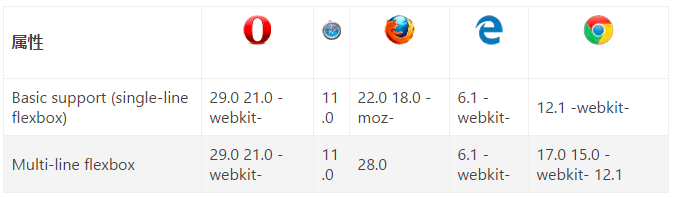
注意：
- 弹性盒子由弹性容器(
Flex container)和弹性子元素(Flex item)组成。 - 弹性容器通过设置
display属性的值为flex或inline-flex将其定义为弹性容器。 - 弹性容器内包含了一个或多个弹性子元素。
- 弹性容器外及弹性子元素内是正常渲染的。弹性盒子只定义了弹性子元素如何在弹性容器内布局。
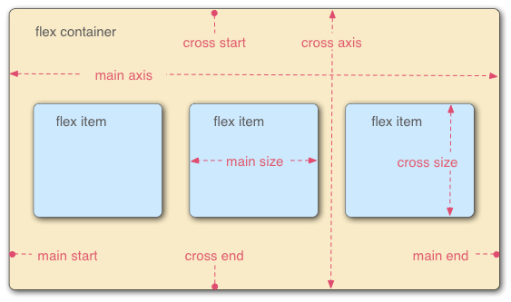
1. Flex 容器属性（设置在容器上）
flex-direction 指定弹性容器中子元素排列方式
flex-wrap 设置弹性盒子的子元素超出父容器时是否换行
flex-flow flex-direction 和 flex-wrap 的简写
align-items 设置弹性盒子元素在侧轴（纵轴）方向上的对齐方式
align-content 修改 flex-wrap 属性的行为，类似 align-items, 但不是设置子元素对齐，而是设置行对齐
justify-content 设置弹性盒子元素在主轴（横轴）方向上的对齐方式
1.1 flex-direction 属性
决定项目的方向。
注意：如果元素不是弹性盒对象的元素，则 flex-direction 属性不起作用。
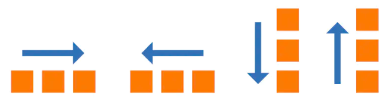
属性值
| 值 | 描述 |
|---|---|
| row | 默认值。主轴为水平方向，起点在左端 |
| row-reverse | 主轴为水平方向，起点在右端 |
| column | 主轴为垂直方向，起点在上沿 |
| column-reverse | 主轴为垂直方向，起点在下沿 |
1.2 flex-wrap 属性
flex-wrap 属性规定flex容器是单行或者多行，同时横轴的方向决定了新行堆叠的方向。
| 值 | 描述 |
|---|---|
| nowrap | 默认值。规定元素不拆行或不拆列。 |
| wrap | 规定元素在必要的时候拆行或拆列。 |
| wrap-reverse | 规定元素在必要的时候拆行或拆列，但是以相反的顺序。 |
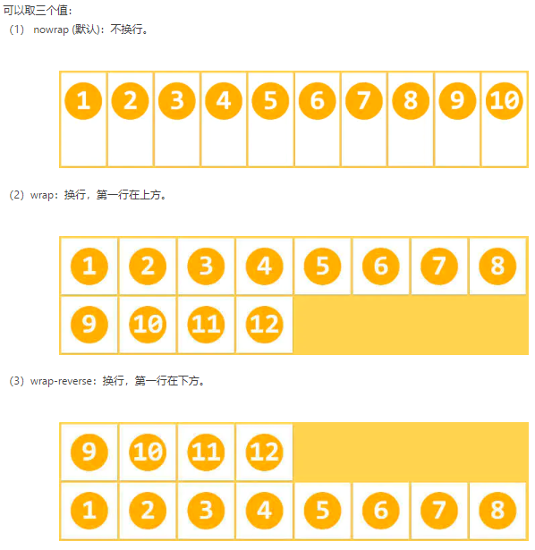
1.3 flex-flow 属性
flex-flow属性是flex-direction属性和flex-wrap属性的简写形式，默认值为row nowrap。
1.4 align-items属性
align-items 属性定义flex子项在flex容器的当前行的侧轴（纵轴）方向上的对齐方式。
| 值 | 描述 |
|---|---|
| stretch | 默认值。项目被拉伸以适应容器。如果项目未设置高度或设为auto，将占满整个容器的高度。 |
| center | 项目位于容器的中心。 |
| flex-start | 项目位于容器的开头。 |
| flex-end | 项目位于容器的结尾。 |
| baseline | 项目位于容器的基线上。 |
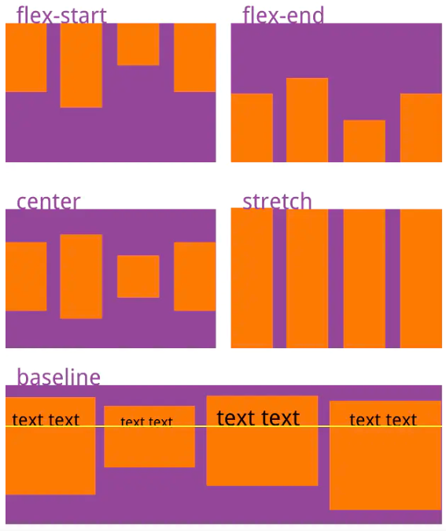
1.5 justify-content属性
justify-content 用于设置或检索弹性盒子元素在主轴（横轴）方向上的对齐方式。
| 值 | 描述 |
|---|---|
| flex-start | 默认值。项目位于容器的开头。 |
| flex-end | 项目位于容器的结尾。 |
| center | 项目位于容器的中心。 |
| space-between | 两端对齐，项目之间的间隔都相等 |
| space-around | 项目位于各行之前、之间、之后都留有空白的容器内。 |
space-around：每个项目两侧的间隔相等。所以，项目之间的间隔比项目与边框的间隔大一倍。
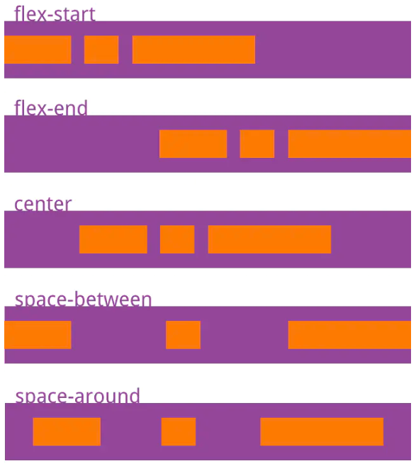
2. Flex 弹性子元素属性
| 属性 | 描述 |
|---|---|
| order | 设置弹性盒子的子元素排列顺序。 |
| flex-grow | 设置或检索弹性盒子元素的扩展比率。 |
| flex-shrink | 指定了 flex 元素的收缩规则。flex 元素仅在默认宽度之和大于容器的时候才会发生收缩，其收缩的大小是依据 flex-shrink 的值。 |
| flex-basis | 用于设置或检索弹性盒伸缩基准值。 |
| flex | 设置弹性盒子的子元素如何分配空间。 |
| align-self | 在弹性子元素上使用。覆盖容器的 align-items 属性。 |
2.1 order属性
<integer>：用整数值来定义排列顺序，数值小的排在前面。可以为负值，默认为0。
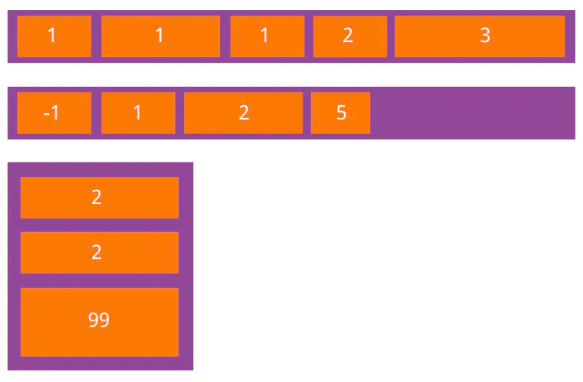
2.2 flex-grow属性
<integer>：一个数字，规定项目将相对于其他灵活的项目进行扩展的量。默认值是 0。
flex-grow属性定义项目的放大比例，默认为0，即如果存在剩余空间，也不放大。如果所有项目的
flex-grow属性都为1，则它们将等分剩余空间（如果有的话）。如果一个项目的
flex-grow属性为2，其他项目都为1，则前者占据的剩余空间将比其他项多一倍。
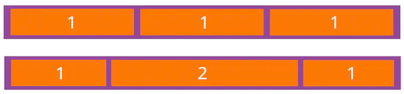
2.3 flex-shrink属性
<integer>：一个数字，规定项目将相对于其他灵活的项目进行收缩的量。默认值是 1。
flex-shrink属性定义了项目的缩小比例，默认为1，即如果空间不足，该项目将缩小。如果所有项目的
flex-shrink属性都为1，当空间不足时，都将等比例缩小。如果一个项目的
flex-shrink属性为0，其他项目都为1，则空间不足时，前者不缩小。负值对该属性无效。
1 | flex-shrink: <number>; /* default 1 */ |
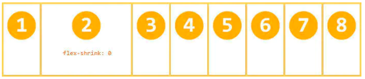
2.4 flex-basis属性
flex-basis属性定义了在分配多余空间之前，项目占据的主轴空间（main size）。
1 | .flex-container .flex-item { flex-basis: <integer> | auto; } |
<integer>：一个长度单位或者一个百分比，规定元素的初始长度。auto：默认值。长度等于元素的长度。如果该项目未指定长度，则长度将根据内容决定。
浏览器根据这个属性，计算主轴是否有多余空间。它的默认值为auto，即项目的本来大小。
它可以设为跟width或height属性一样的值（比如350px），则项目将占据固定空间。
2.5 flex属性
flex 属性用于设置或检索弹性盒模型对象的子元素如何分配空间。
flex 属性是 flex-grow、flex-shrink 和 flex-basis 属性的简写属性，默认值为0 1 auto。后两个属性可选。
该属性有两个快捷值：auto (1 1 auto) 和 none (0 0 auto)。
建议优先使用这个属性，而不是单独写三个分离的属性，因为浏览器会推算相关值。
特殊值： flex: 1; 等价于 flex: 1 1 但不等于 flex: auto;
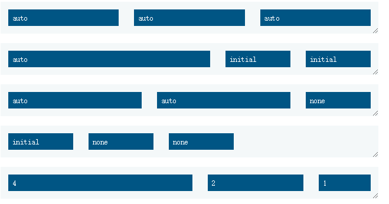
2.6 align-self属性
align-self 属性允许单个项目有与其他项目不一样的对齐方式，可覆盖align-items属性。
默认值为auto，表示继承父元素的align-items属性，如果没有父元素，则等同于stretch。
1 | .flex-container .flex-item { |
| 值 | 描述 |
|---|---|
| auto | 默认值。元素继承了它的父容器的 align-items 属性。如果没有父容器则为 “stretch”。 |
| stretch | 元素被拉伸以适应容器。 |
| center | 元素位于容器的中心。 |
| flex-start | 元素位于容器的开头。 |
| flex-end | 元素位于容器的结尾。 |
| baseline | 元素位于容器的基线上。 |
| initial | 设置该属性为它的默认值。 |
| inherit | 从父元素继承该属性。 |
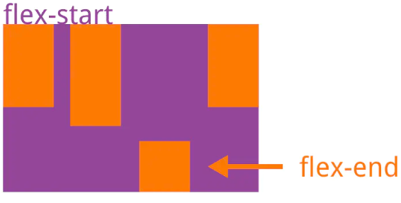
二、Grid 网格布局
转载阮一峰CSS Grid 网格布局教程，写的很不错，牛啊！
这篇文章也可做为参考 传送门
网格布局（Grid）是最强大的 CSS 布局方案。
它将网页划分成一个个网格，可以任意组合不同的网格，做出各种各样的布局。以前，只能通过复杂的 CSS 框架达到的效果，现在浏览器内置了。
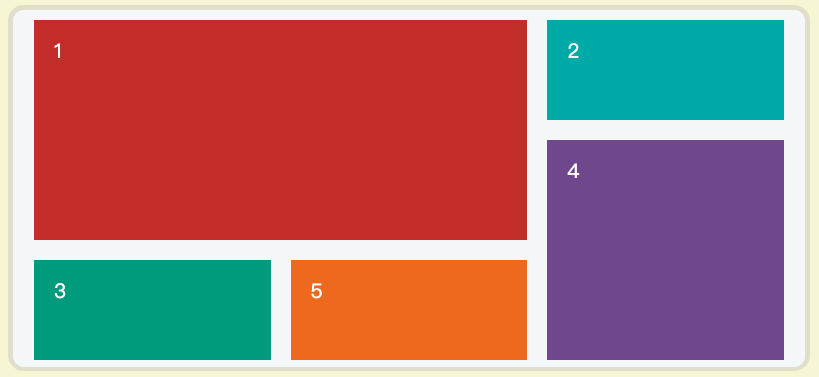
上图这样的布局，就是 Grid 布局的拿手好戏。
Grid 布局与 Flex 布局有一定的相似性，都可以指定容器内部多个项目的位置。但是，它们也存在重大区别。
Flex 布局是轴线布局，只能指定”项目”针对轴线的位置，可以看作是一维布局。Grid 布局则是将容器划分成”行”和”列”，产生单元格，然后指定”项目所在”的单元格，可以看作是二维布局。Grid 布局远比 Flex 布局强大。
三、浮动布局
这是一篇有逻辑的学习记录
div是块级元素，在页面中独占一行，自上而下排列，也就是传说中的流
无论多么复杂的布局，其基本出发点均是：“如何在一行显示多个div元素”。 显然标准流已经无法满足需求，这就要用到浮动。
浮动可以理解为让某个div元素脱离标准流，漂浮在标准流之上，和标准流不是一个层次。
浮动之后的位置：假如元素A和元素B均浮动，则A和B在同一行；若仅B浮动，则B的顶端对齐A的底端。
浮动之后的顺序：靠近页面边缘的一端是前，远离页面边缘的一端是后。
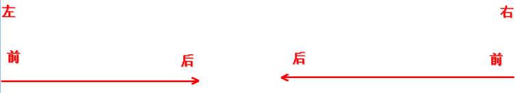
清除浮动：清除浮动可以理解为打破横向排列（元素浮动之前，也就是在标准流中，是竖向排列的，而浮动之后可以理解为横向排列）对于CSS的清除浮动(clear)，一定要牢记：这个规则只能影响使用清除的元素本身，不能影响其他元素。
1 | 语法： |
最后补充一点，正如下面圣杯布局的float实现方式一样，当同一行元素由于行宽不足而主动排列在下一行的时候，可以通过设置负外边距Margin**，使其回到上一行，在利用position对位置进行微调**。
四、圣杯布局
所谓的圣杯布局就是左右两边大小固定不变，中间宽度自适应。我们可以用浮动、定位以及flex这三种方式来实现
一般这种布局方式适用于各种移动端顶部搜索部分，这是最常见的，如京东手机版主页面顶部搜索：
可以看到左边有个菜单按钮，中间是搜索框，右边是登录两个文字，左右大小是固定的，而中间部分则是随着手机屏幕尺寸的大小而自适应
第一种方法 flex实现
需要理解
flex的用法
*vh为相对于视口的高度。视口被均分为100单位的vh
1 | <div class='container'> |
1 | <style> |
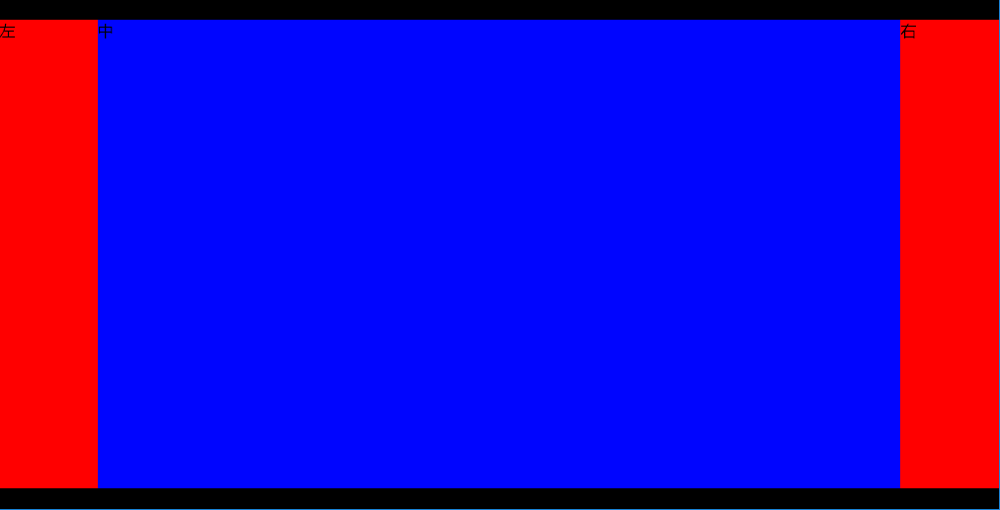
第二种 position实现
思路：给容器设置左右内
padding，让中间部分占满所有剩余空间，左右设置absolute使其左右分布
1 | <div class="main"> |
1 | .main div{ |
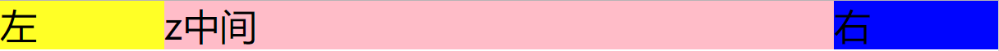
第三种方法 float实现
经典实现方式：
应遵循以下要点
- 两侧宽度固定，中间宽度自适应
- 中间部分在DOM结构上优先，以便先行渲染
- 允许三列中的任意一列成为最高列
- 只需要使用一个额外的
<div>标签
有一个跟完美解释 圣杯布局 的文章：传送门
HTML结构
1 | <body> |
CSS结构
1. 假设左侧的固定宽度为200px，右侧的固定宽度为150px，则首先在container上设置：
1 | .container { |
为左右两列预留出相应的空间，得到如下示意图：
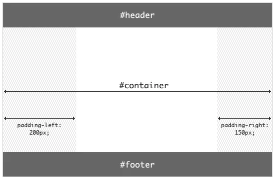
2. 随后分别为三列设置宽度与浮动，同时对footer设置清除浮动：
1 | .container div{ |
效果如下：
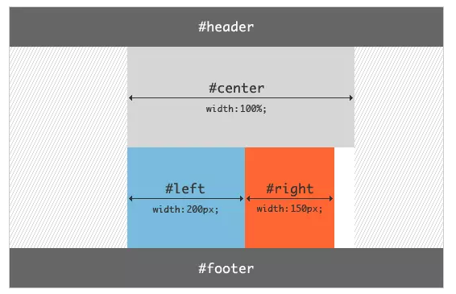
注意：根据浮动的特性，由于
center的宽度为100%，即占据了第一行的所有空间，所以left和right被“挤”到了第二行
此处上下为核心关键
3. 接下来的工作是将left放置到之前预留出的位置上，这里使用 负外边距 ：
1 | .left{ |
效果如下：
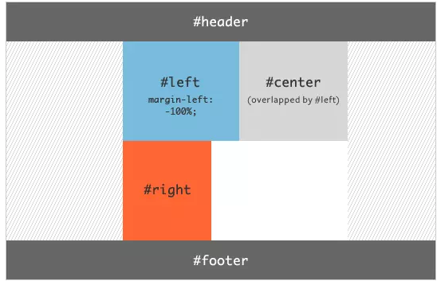
4. 随后还需要使用定位(position)方法：
1 | .left{ |
这里使用position: relative和right: 200px将left的位置在原有位置基础上左移200px，以完成left的放置：
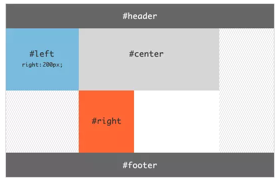
5. 最终效果
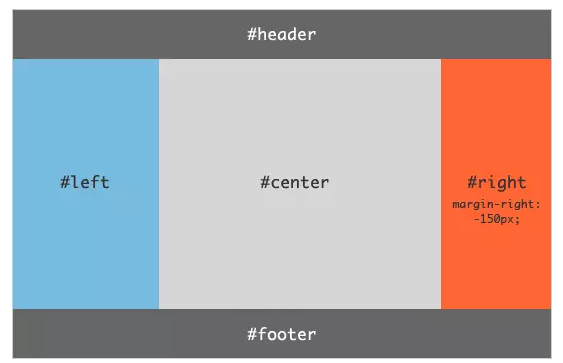
至此，布局效果完成。不过还需要考虑最后一步，那就是页面的最小宽度：要想保证该布局效果正常显示，由于两侧都具有固定的宽度，所以需要给定页面一个最小的宽度，
但这并不只是简单的200+150=350px。回想之前left使用了position: relative，所以就意味着在center开始的区域，还存在着一个left的宽度。所以页面的最小宽度应该设置为200+150+200=550px：
完整代码结构
1 |
|
五、双飞翼布局
参考自圣杯布局和双飞翼布局的理解与思考，博主写的很有逻辑
DOM结构
1 | <body> |
双飞翼布局的DOM结构与圣杯布局的区别是用container仅包裹住center，另外将.column类从center移至container上。
CSS代码
按照与圣杯布局相同的思路，首先设置各列的宽度与浮动，并且为左右两列预留出空间，以及为footer设置浮动清除：
1 | #container { |
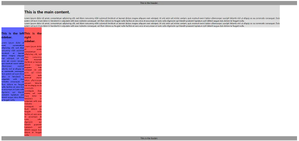
以上代码将container,left,right设置为float: left，而在container内部，center由于没有设置浮动，所以其宽度默认为container的100%宽度，通过对其设置margin-left和margin-right为左右两列预留出了空间。
将left、right放置到预留位置
1 | #left { |
最后计算最小页面宽度：由于双飞翼布局没有用到position:relative进行定位，所以最小页面宽度应该为200+150=350px。但是当页面宽度缩小到350px附近时，会挤占中间栏的宽度，使得其内容被右侧栏覆盖
因此在设置最小页面宽度时，应该适当增加一些宽度以供中间栏使用（假设为150px），则有：
1 | body { |
布局整体代码为：
1 | body { |
总结与思考
通过对圣杯布局和双飞翼布局的介绍可以看出，圣杯布局在DOM结构上显得更加直观和自然，且在日常开发过程中，更容易形成这样的DOM结构（通常<aside>和<article>/<section>一起被嵌套在<main>中）；而双飞翼布局在实现上由于不需要使用定位，所以更加简洁，且允许的页面最小宽度通常比圣杯布局更小。
其实通过思考不难发现，两者在代码实现上都额外引入了一个<div>标签，其目的都是为了既能保证中间栏产生浮动（浮动后还必须显式设置宽度），又能限制自身宽度为两侧栏留出空间。
六、水平居中
五种基础实现方式
1. text-align
text-align 是入门最常用的属性，根据字面意思是文本对齐用的。
只需在父级标签上设置即可，虽然内部的子元素不管是块级元素 or 非块级元素都可以使用，但需注意块级元素会占用整行的宽度，文本是在这个宽度中作水平居中。
2. 定宽 margin auto
这也是常见的水平居中方式，通过设置子元素的 margin 属性来控制距离父元素的距离。
需要注意：子元素如果是块级元素，就最好设置宽度，不然就会占满于父元素，在通过 text-align 文本居中对齐就没有意义了。对于非块级元素必须要设置宽度。
3. flex 方式
通过设置浮动布局来实现居中，这是相对上两种方法某种程度上最简单的实现，因为在其基础上可以做更多布局的扩展，不用担心破坏布局。
1 | justify-content: center; |
4. position + 浮动(不建议)
现在这两种是比较有趣的定位方式，实际场景不建议使用，我是不愿意别人这样写，脑袋还要转个弯，来理解这样布局的计算方式
如果元素是块级元素，通过 float 浮动属性，将它的宽度“抹去”。然后通过对于上级元素的相对定位通过错位修正的方式来居中。
让父元素的左侧从中间开始定位，子元素再根据自己的实际宽度往左偏移一半达到水平居中的目的。
1 | <div class="wrapper"> |
5. position + transform (不建议)
思路同上，不同的是这次设置子元素为绝对定位，并距离左侧偏离一半，最后通过 transform 根据元素的实际宽度往左再偏移一半，达到居中效果。
1 | <div class="wrapper"> |